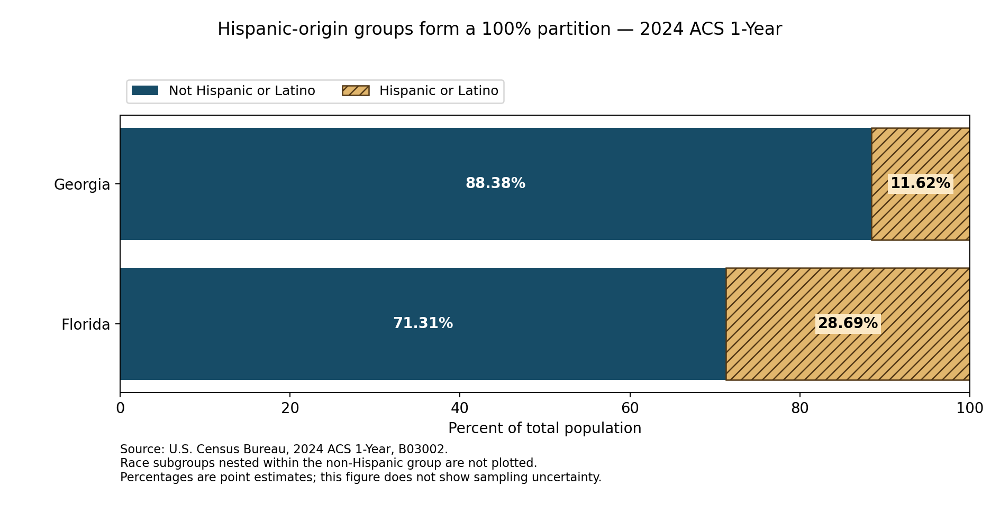
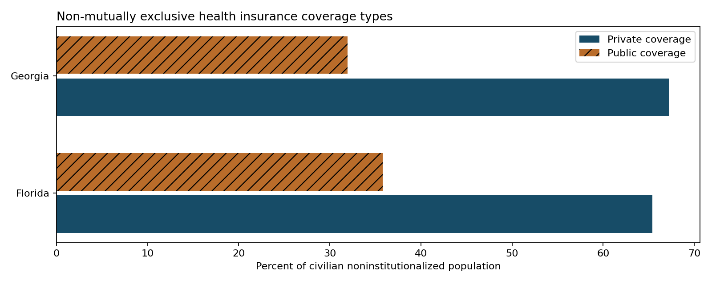

Use the consolidated Census Statistical Quality Standards, revised September 29, 2026, within their stated scope. Separate formal requirements from the practical design recommendations and implementation choices described here. Coordinate this guidance with Titles and Subtitles, Legends, and Sources.
A nested category is a subgroup within a larger category (for example, private insurance is a subset of people with insurance). Mutually exclusive categories do not overlap at a defined level and universe. Non-mutually exclusive categories overlap: one person or item may belong to more than one category. A parent total must never be added to its own child as if they were separate observations; overlapping categories must not be stacked as a single additive whole.
Tables can communicate nesting through indentation, but chart readers may miss the hierarchy or an explanatory footnote. The denominator and membership rules must be visible where readers interpret the result.
Use this guidance whenever charted series have a parent–child relationship, when membership can overlap, or when a comparison implies categories sum to a whole.
Recommended: Where defensible, construct mutually exclusive categories that reconcile to the relevant whole; label overlap explicitly; consider remainder bars, several coordinated charts, or a table when those formats communicate membership more clearly. (Consolidated from the original.)
Not recommended: A visually complex graphic whose group structure cannot be interpreted without substantial mental arithmetic, or any display that silently changes the denominator across panels.
Prefer a structured table when nested rows and category membership must be inspected precisely. Prefer separate labeled bars or remainder bars to show each overlapping category as a percentage of the same defined universe. Use a 100% stacked chart only for a verified mutually exclusive and exhaustive partition. Use multiple charts or small multiples when a single display obscures these distinctions.
| Analytical goal | Prefer | Why |
|---|---|---|
| Show a valid insured/uninsured split | 100% stacked bar or labeled table | Those two categories form a partition when defined for the same universe |
| Compare overlapping insurance types | Separate labeled bars/remainder bars | Each type is evaluated against a stated denominator without pretending categories sum to 100% |
| Show parent and nested subtypes | Indented accessible table or separate panels | Makes the hierarchy explicit |
| Explain multiple overlapping groups | Cross-tabulation or carefully annotated table | Displays membership and intersection explicitly where available |
Document dataset name, table/variable identifiers, reference year, geography, universe, units, category membership rules, denominator, and suppression/missing-value conventions. Distinguish counts, percentages of everyone, and percentages of the insured; these are not interchangeable. Do not infer category intersections from marginal totals alone.
For ACS published estimates, retain associated margins of error where applicable, distinguish sampling uncertainty from arithmetic consistency, and cross-reference Visualizing Uncertainty. Additivity checks must respect the published variables, estimates, and Census guidance; do not assume derived estimate MOEs equal the sum of component MOEs.
Provide meaningful alternative text describing which groups overlap and what the viewer should conclude. Include an accessible HTML table with column and row headers, group labels, counts/percentages, denominators, and relevant notes; a CSV may supplement but does not replace it. Check text contrast, noncolor cues, logical reading order, keyboard operation where applicable, and screen-reader comprehension on the published GitHub page. Review against applicable Section 508/WCAG criteria; do not assert compliance on the basis of automated tests alone.
| Problematic approach | Why it matters | Preferred approach |
|---|---|---|
| Parent and child appear as equal additive segments | The same members are counted twice | Show the hierarchy explicitly or plot mutually exclusive children only |
| Public and private insurance shares form a 100% stack | A person may have both forms of coverage | Use separately labeled bars/remainder bars with a common stated universe |
| Overlap is disclosed only in a remote footnote | Readers interpret the graphic before finding the caveat | Put a visible membership note beside the chart and repeat the explanation in accessible text |
| Denominator changes from everyone to insured people between panels | Identical percentages acquire different meanings | Label each denominator and align panels only when comparisons are valid |
The original permits disclosure in notes, titles, subtitles or legends. Placing the explanation near the graphic is a practical accessibility and interpretation recommendation, not a newly asserted Census mandate. If no defensible simple chart communicates the membership, use a table.
The following examples are retained from the Census guidance. Their datasets, periods, universes and design lessons remain distinct. Some illustrate limitations or less-preferred choices; inclusion does not certify every design or its accessibility.
Example 1: Table Excerpt from Health Insurance Coverage in the United States 2022
Health insurance data has both nested and non-mutually exclusive categories characteristics. Whether or not one has health insurance is binary, but the categories for displaying types of health insurance are not mutually exclusive. In a given year, people can, and do, have both public and private insurance, and within the those plans they can take advantage of several options. Theoretically, a single person with health insurance could be counted in all of the insured categories.
Example 2: Chart excerpt: health insurance coverage types in 2021 and change from 2020 to 2021

The left-hand bar charts describe the percentages of people who have insurance and the types of insurance one has.
There are several visual miscues in Example 2 that contribute to the likelihood of misinterpreting these results. * The first bar plot’s color and font scheme create a visual inconsistency. While the bolder top bar and lighter subsequent bars in the second and third bar plots correctly imply that the lighter categories are subgroups of the top bolded category, this visual cue is misleading in the first chart. * The viewer needs to perform math to see that the subgroups in the second and third bar plot do not add to 100%. * The note stating that these are not mutually exclusive is easy to miss, it is buried beneath the chart among a series of notes. Obviously good charts aspire to be visually clean and the desire to keep the notes small makes sense. But in this case, even bolding that note would increase the chance that it gets read. * It’s not entirely clear if the statistics in the second two charts are percents of the entire population or percents of those with insurance. One may conclude that 66% of those with insurance have a private insurance plan, or that 66% of people have a private insurance plan. Again, the nesting in the table allows the viewer to understand that 66% of people have a private insurance plan. The visualization approach used in Example 2 is acceptable, but not ideal. A simple fix could be to use a stacked bar chart for the first statistic (uninsured vs insured) clearly showing they add up to 100%. Because there are only 2 categories, the stacked bar chart should be easily interpretable and a clear “parts of a whole” depiction. Additionally bolding the chart note could help increase the clarity. Handling non-mutually exclusive categories is a common struggle when determining how to depict your data visually. Here are some charts that get increasingly more difficult to interpret and ultimately lead to a very complex task for the viewer. The complexities here need to be avoided. Always consider how long it takes for a viewer to understand the message in your visualization. If you find it takes enormous amounts of mental concentration, explore simpler solutions or a less complex story. If you cannot find a solution, avoid presenting an overly complex chart. Remember, it’s ok and maybe preferable in many cases to use a TABLE.
Example 3: Most Parents Don’t Have Any Formal Child Care Arrangements

Example 3 displays non-mutually exclusive categories through a series of bar charts known as “remainder bars.” Remainder bars show not just the individual statistic, but the remainder of the universe for that statistic. Remainder bars help users understand the parts of a whole and make it easier to see that these individual categories are not mutually exclusive.
Interpretation note: The original table reports 2021 and 2022, while the chart image reports 2021 coverage and change from 2020 to 2021. Preserve those reference periods rather than treating the figures as a single matched-year dataset. The insurance illustrations demonstrate overlap; the ACS B03002 addition demonstrates a hierarchy and valid partition. The ACS profile DP03 extension can demonstrate insurance overlap when its variables are verified.
2024 ACS category relationships. B03002: validate the Hispanic/not-Hispanic partition and separate parents from nested children. The supplied builder also has a DP03 insurance-overlap example.
What this adds: Adds auditable category and denominator checks while preserving the original insurance and child-care discussions.
Run evidence: The supplied November 10, 2026 run generated this example. Saved-data arithmetic and chart layout were reviewed for this package; published-page accessibility testing remains outstanding.


Source and interpretation: U.S. Census Bureau, 2024 ACS 1-Year Estimates, Detailed Table B03002 and Data Profile DP03. B03002 percentages use total population; DP03 coverage percentages use the civilian noninstitutionalized population. The supplied run completed November 10, 2026 (UTC).
The origin display is an additive partition; the coverage display is not. The saved export contains percentages and a derived overlap count, but omits the raw B03002 child counts and DP03 coverage counts. Those raw fields are still needed for an independent audit of all category checks. The derived overlap is not a separately published estimate and has no calculated MOE.
Selected values (rounded for display; CSV retains exported precision):
| State | Not Hispanic (%) | Hispanic (%) | Private coverage (%) | Public coverage (%) |
|---|---|---|---|---|
| Florida | 71.31 | 28.69 | 65.41 | 35.82 |
| Georgia | 88.38 | 11.62 | 67.25 | 31.94 |
Read the data tables · Download nested_categories_acs.csv
Implementation: Python source. The integrated layout is reproduced from the saved CSV by the reviewed-layout script. The original illustrations above and the ACS output have separate asset paths and source statements.
Use the original illustrations to discuss design choices and their source-specific limitations. Use the ACS addition to demonstrate a documented data-to-chart workflow. Do not combine values across examples, imply that they use one dataset, or relabel a historical image as a new ACS output.
Retrieve 2024 ACS 1-Year B03002 and its official metadata. Use
B03002_001E, B03002_002E,
B03002_012E, and B03002_003E with
corresponding annotations and available MOEs. Validate one record per
selected state, finite valid counts, a positive denominator for
percentages, and stable universe/period definitions. Keep a category
relationship field such as whole,
exclusive_part, or nested_child; a flat label
alone does not encode membership.
Use the supplied
Python implementation and the ACS example
runner. The runner maps this page to job
nested_categories. Its dependencies are listed in requirements.txt.
Confirm supported input options in the implementation and its
accompanying README.
The executed notebook contains saved outputs from the supplied ACS run. The run status CSV records generated results. The notebook produces the ACS additions; it does not recreate the historical Census illustrations.
The analytical definitions and output checks on this page also specify the requirements for an R counterpart. A verified R implementation is not bundled in this combined package. Retain R execution and Python/R agreement as outstanding validation tasks; do not describe them as completed.
A personal Census API key is required for data queries under the current
API guidance. Read CENSUS_API_KEY from the analyst’s
environment. Redact the key from logged URLs, errors, saved notebooks,
and manifests; do not commit it. Save source variables, the full
reference period, geography, transformations, exclusions, retrieval
time, and tested dependency versions with the outputs.
Save category IDs, parent IDs, membership definitions, counts, percentage denominators, applicable source MOEs, and reconciliation results. Parent-minus-child estimates and derived percentages need appropriate uncertainty methods; subtracting or adding their MOEs is not a valid general method. Label any intentionally invalid sum as a teaching example and keep it separate from published source estimates.
| Check | Expected evidence |
|---|---|
| Origin partition | Valid 002E + 012E = 001E for each included state |
| Nesting | Valid 003E ≤ 002E ≤ 001E; child is never added to its
own parent to form a claimed whole |
| Percentages | Whole-population and within-parent shares use explicitly different, correctly labeled denominators |
| Overlap | Any intersection/union claim has supporting joint-membership data, not only marginal totals |
| Accessible explanation | The narrative and table expose the same hierarchy, denominator and overlap caveats as the chart |
| Issue | Why it matters | Correction |
|---|---|---|
| Parent and subgroup summed | Double counts members | Represent parent separately or use disjoint children |
| Two overlapping types shown as a 100% whole | Implies false additivity | Use separate bars/remainder bars and explicit overlap note |
| Percentage denominator unstated | Changes the meaning of the comparison | Label the universe and denominator |
| Intersections inferred from marginal totals | Intersection is not uniquely determined | Use an authoritative cross-tabulation or appropriate microdata |
| Overlap indicated only by color | Excludes some users | Add labels, notes, patterns/structure, and accessible table |
Use the September 29, 2026 consolidated Census standards, especially E1-6, E2-2.3 and E3-2.4, within their stated scope. Record the implementation review, applicable statistical methods and actual rendered-site accessibility findings separately from this guidance checklist.